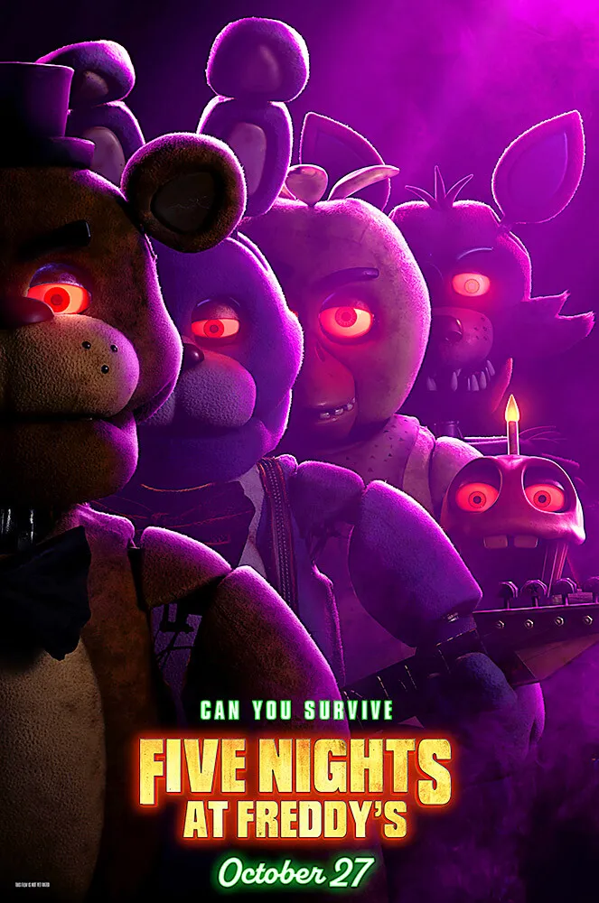
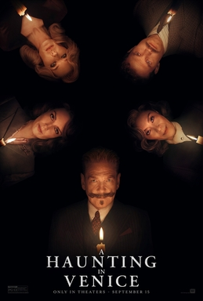

Saltburn (2023) - Amazon Prime - Film

Okay so this movie was a huge ass risk but damn it I can respect the hell out of it! Was I disgusted during majority of the runtime? Yes. Was that the director's intention? Probably. I'll be honest, if the movie wasn't as beautiful as it was, I dont know how many times I'd consider rewatching it cause by goly it is just abhorent at some points. And to be honest, it over explained itself way too much at the end to the point where I was anticipating the movie to end like three different times. I guess the only cinematic way to end the film was to have buddy have his saltburner flopping around while he danced in the the house that lacked humanity.
- Objective Rating: 3.5/5 Stars
- Enjoyment Rating: 3/5 Stars
- Rewatchability Rating: 3/5 Stars
Overall Rating: 3/5 Stars
Okay so I know I said that the movie was "abhorent" and you're probably thinking if it was that gross, why did it get 4 out of 5 stars for the enjoyment Rating? Well bucko, while I was utterly disgusted, I enjoyed that the movie made me feel something other than apathy. Even if it was not so sicko mode. Or very sicko mode depending on the context of sicko mode in the equation.
Five Nights at Freddies (2023) - Peacock - Film
I had no previous history with this game franchise other than seeing a few youtubers and streamers play it but I never really tapped in like that because I never really was a video game head. All that being said, I has a lot of fun with this movie and definitely would love to see the more of the world that this story takes place in. Josh Hutcherson ate and Matthew Lillard also did his thing. Plus I lowkey didnt see the twist coming until towards the end and I dont know if I should admit that haha. But yeah overall I saw this movie with some cool people and had a fun time watching this fine piece of entertainment!
- Objective Rating: 3/5 Stars
- Enjoyment Rating: 4/5 Stars
- Rewatchability Rating: 3/5 Stars
Overall Rating: 3.3/5 Stars
A Haunting In Venice (2023) - - Film
Okay so I am a complete Agatha Christie GOBLIN! I haven't read all of the books yet becuase I don't want to run out of stories. So instead of spamming the books, I'm more "drip-panning" myself the books so the high never runs out cause the day I run out of Agatha Christie books to read will be a sad day indeed. I say all that to remind everyone how incredibly biased I am when it comes to the Hercule Poirot movies. Everyone is a delight, even though in my opinion it is the weakest of the three Kenneth Branagh entries.
- Objective Rating: 3/5 Stars
- Enjoyment Rating: 4/5 Stars
- Rewatchability Rating: 3.5/5 Stars
Overall Rating: 3.5/5 Stars
The Last of Us (2023) - Max - Television

I completely loved this show! Although I felt a lot of despair while watching the show but that just means the show was doing it's job. From episode one, I was completely locked in this world and even though I'm not too much of a gamer, it made me understand the hype behind the games.
- Objective Rating: 4/5 Stars
- Enjoyment Rating: 4/5 Stars
- Rewatchability Rating: 3/5 Stars
Overall Rating: 3.6/5 Stars
Infinity Pool (2023) - - Film
MIA GOTH IS MOTHER!
I rest my case.
- Objective Rating: 3.5/5 Stars
- Enjoyment Rating: 4/5 Stars
- Rewatchability Rating: 4/5 Stars
Overall Rating: 3.83/5 Stars
Barbie (2023) - Max - Film
Barbie was a cultural moment that I dont think I have ever seen before! The closest thing I've experienced to it would be something like Black Panther so I guess you could say this movie was feminist's Black Panther for lack of better comparisons. I really liked it but to be honest, I didn't lovre it which doesn't mean it was bad, more so I just don't think it said anything profound that I had never heard been put into words before. But I guess I can't fault the movie for being a paletable version of ideals that I have already heard before, cause at the end of the day the fact that it was so paletable made it successful and didn't alienate some viewers. Don't mean to treat it like it was supposed to be Citizen Kane though, even though it just seems I'm trying to justify it not being higher than it is now but I think it deserves this 5 spot.
- Objective Rating: 4/5 Stars
- Enjoyment Rating: 4/5 Stars
- Rewatchability Rating: 4/5 Stars
Overall Rating: 4/5 Stars
GenV Season One (2023) - Amazon Prime - Television
I not only was surprised by this tv show but super delighted! It was my favorite tv show of the year that aired this year and it was awesome beimng able to experience this show sort of in a vacuum. That meaning that I didn't really payt attention to the breakdowns on youtube or anything and kind of didn't have any fomo about the show. So, by the time I stared the first episode, the last one had long aired so I could just binge the absolute hell out of this show. I am so excited for this show and in turn, The Boys Universe because it feels real. Not meaning that it looks realistic but rather it makes you care about the stakes because of the characters involved, not because of the percieved scope of the awesomeness of the stakes. I found this show giving us the little moments with characters for us to be able to live with them and ultimately make us care about them. "Because we may not all be able to relate to uncovering a conspiracy theory of a web and history of crimes caused by your university, but we can all relate to wanting to prove yourself, fight for something and even being used and overlooked at some point. All in all, I am very very excited about the next season as well as The Boys Season 4.
- Objective Rating: 4/5 Stars
- Enjoyment Rating: 4/5 Stars
- Rewatchability Rating: 5/5 Stars
Overall Rating: 4.33/5 Stars
Theater Camp (2023) - Hulu - Film
I love this movie!
- Objective Rating: 4.5/5 Stars
- Enjoyment Rating: 4/5 Stars
- Rewatchability Rating: 5/5 Stars
Overall Rating: 4.5/5 Stars
Bottoms (2023) - Amazon Prime - Film

I don't think I laughed harder during a theater experience this year. The levels of writing that were more that just clever but they spoke to what I feel is a whole generation of comedy film lovers that were tired of condescending comedy.
- Objective Rating: 4.5/5 Stars
- Enjoyment Rating: 5/5 Stars
- Rewatchability Rating: 5/5 Stars
Overall Rating: 4.83/5 Stars
Godzilla Minus One (2023) - Still In Theaters - Film
After thinking about the movie for a while I am confident in saying that this is the best Godzilla movie that I have ever seen. And in the age where there have been 3 big blockbuster films with Godzilla in the title name before this movie came out, I think thats saying something. Awesome wouldn't even be the word to describe the movie for me in my opinion; and to be fair, I don't think you could contextualize this movie with one word anyway. But as I was saying this movie was filled with a lot of emotions from me; from pain, to sorrow to hopelessness to fear and everything in between. I only felt triumph at certain parts of the movie becuase as the film wanted it to be, this film isnt about the grand spectacle of Godzilla. It is about the true nature and desturcution of war and more specifically nuclear war and it's effects on the people who's lives are completely changed by it.
- Objective Rating: 5/5 Stars
- Enjoyment Rating: 5/5 Stars
- Rewatchability Rating: 5/5 Stars